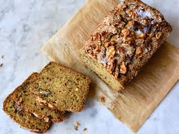

Combine tomatoes, shallot, garlic, and most of the olive oil in a baking pan.
Season with salt, pepper, and red pepper flakes and toss to combine.
Place feta into center of tomato mixture and drizzle remaining olive oil on top.
Bake for 40 to 45 minutes, until tomatoes are soft and feta is golden.
Meanwhile, start cooking the pasta. Get a pan and fill with cold water and a dash of salt. Add the pasta and turn on high. When the water begins to boil take lid off and wait until pasta is al dente.
When pasta is done, get a colander and drain.
Then, mix the tomato and feta mixture. Stir in pasta until combined.
Dessert
Zucchini Bread

Ingredients
3 to 4 c. grated fresh zucchini
2 t. butter for greasing the pans
3. all-purpose flour
1 t. baking soda
1 t. baking powder
2 t. cinnamon
1/2 t. ground ginger
1/4 t. ground nutmeg
1 1/3 c. sugar
2 large eggs, beaten
2 t. vanilla extraxt
1/4 t. salt (omit if using salted butter)
3/4 c. unsalted butter, melted
1 c. dried cranberries or raisins (optional)
1 c. chopped pecans or walnuts (optional)
Equipment: grater, small bowl, colander, two 9x5 loaf pans, two large bowls, whisk
Steps
Place the grated zucchini in a colander over a bowl to drain any excess moisture.
Preheat oven to 350°F. Butter the the two loaf pans.
In a large bowl, whisk together the flour, baking soda, baking powder, cinnamon, ginger, and ground nutmeg.
In another large bowl, whisk together the sugar, eggs, vanilla extract, and salt (omit salt if using salted butter). Stir in grated zucchini and then melted butter.
Add the flour mixture, a third at a time, to the sugar, egg, and zucchini mixture, stirring after each incorporation. Fold in the nuts and dried cranberries or raisins, if using.
Divide the batter equally between the loaf pans. Bake for 50 minutes at 350°F or until a tester inserted into the center comes out clean. Cool in pans for 10 minutes. Turn out on wire racks to cool thoroughly.